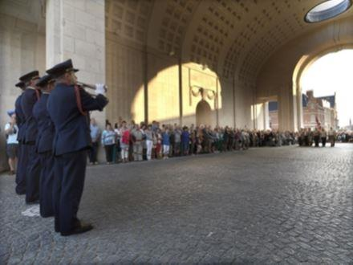

L’histoire commence en 1862 lors de la guerre de Sécession. Alors que l’unité de l’Armée de l’Union du capitaine Robert Ellicombe se trouvait près de Harrison’s Landing en Virginie. De l’autre côté de cette étroite bordure de terre se tenait l’Armée de la Confédération.
Durant la nuit, le Capitaine Ellicombe entendit les gémissements d’un soldat grièvement blessé.
Ne sachant pas si c’était un soldat de l’Union ou de la Confédération, le capitaine décida au risque de sa vie d’aller chercher le blessé afin qu’on lui procure des soins médicaux.
Sous les feux incessants de la bataille il rampât jusqu’au soldat blessé pour le ramener au camp de l’Armée de l’Union. Quand finalement il atteignit son camp, il découvrit que c’était un soldat ennemi……il était décédé.
Le Capitaine alluma une lanterne et dans la pénombre il découvrit le visage du soldat. C’était son propre fils. Le garçon étudiait la musique dans le Sud lorsque la guerre éclata. Sans le dire à son père, le garçon s’était enrôlé dans l’Armée de la Confédération. Le lendemain matin, le cœur brisé, le Capitaine malgré le statut d’ennemi de son fils demanda la permission à ses supérieurs de lui faire des funérailles militaires. Sa demande lui fut accordée mais en partie seulement.
Le Capitaine avait aussi demandé que la fanfare de l’armée puisse jouer aux funérailles de son fils. Sa demande lui fut refusée dû au fait que son fils était un soldat ennemi. Mais par respect pour le père, on décida tout de même de lui allouer un seul musicien. Le Capitaine choisit un joueur de clairon. Il demanda au musicien de jouer une suite de notes musicales qu’il avait trouvée sur un morceau de papier dans la poche de l’uniforme du jeune militaire. C’est ainsi que naquit l’émouvante mélodie de l’appel aux morts, maintenant jouée aux funérailles militaires.
Emouvant, non ? Sauf que c’est des foutaises ! Une légende urbaine colportée en français et en anglais sur l’Internet et, même, reprise, dans un magazine officiel du Ministère français de la défense (page 6 du magazine « Chemin de la Mémoire n°236 de mai 2013 ») Les études, sur ce sujet, menées par des historiens militaires américains, dont le Master Sergeant Jari Villanueva (chercheur à West Point) montre qu’elle a été composée à Harrison's Landing, en Virginie par le Général de Brigade Daniel Butterfield, commandant de la 3e Brigade de la 1re Division du 5e Corps de l’Armée du Potomac. Durant une bataille, il écrivit des notes de musique au crayon sur une enveloppe.
Le soir même, il convoqua l’un des clairons de la brigade, le soldat Olivier Willcox Norton et lui demanda de jouer les notes écrites. Il en a alors changé quelques-unes, allongeant certaines, raccourcissant d'autres mais en conservant la mélodie initiale.
Lorsqu'il a été satisfait du résultat final, il demanda au soldat d'abord de transcrire sur une portée les notes telles qu'il venait de les modifier puis ensuite ils sont allés ensemble sur la place d'appel du camp. La nuit était tombante. Il demanda alors au musicien de jouer la sonnerie au bugle en orientant l'instrument d'abord au nord, puis au sud, puis à l'est et enfin à l'ouest.
L'origine de la sonnerie « Aux Morts » remonte au 17e siècle et est née avec les troupes britanniques en campagne militaire en Hollande qui la découvrirent dans une vieille coutume hollandaise appelée « TAPTOE ».
Le Taptoe était utilisé pour signaler la fin de la journée, donc la fermeture des robinets des barils de bières. (Tap = robinet)
Les Britanniques s'en inspirèrent et créèrent plusieurs sonneries pour signaler la fin de la journée mais aussi pour signaler aux sentinelles dispersées autour du camp que l'officier de permanence commençait sa tournée d'inspection des postes de garde. Une première sonnerie appelée « The Rouse » était jouée au bugle (et non au clairon) pour avertir du départ du camp de l'officier.
Une seconde et dernière sonnerie, appelée « Last Post », avertissait du retour au camp de l'officier et signalait aux sentinelles qu'elles étaient dès lors en faction et qu'elles devaient redoubler de vigilance.
Par extension, on adopta cette dernière sonnerie lors des funérailles et cérémonies militaires. Cette sonnerie symbolisait non seulement un dernier adieu mais aussi que la vie du soldat était terminée et que, dès lors, il pouvait reposer en paix.
Depuis 1919, elle a été jouée tous les soirs sans interruption sauf pendant l’occupation allemande (du 20 mai 1940 au 06 septembre 1944), sous l'arche monumentale du cimetière d'Ypres (Belgique) qui porte les noms gravés de tous les soldats britanniques tués durant la 1ere guerre mondiale en Flandres.
C’est, d’ailleurs, pourquoi l'armée belge utilise aussi la sonnerie « Last Post » comme sonnerie aux Morts.
Depuis juillet 1862, époque de la guerre de Sécession, ces sonneries ont été remplacées par la sonnerie « TAPS » que l'on connaît actuellement.
Le général Butterfield baptisa la sonnerie : Tattoo, en souvenir d'une pièce musicale qu'il avait entendue jadis chez les Anglais. En réalité la pièce s'appelait « TAPTOE », était d'origine hollandaise, et un de ses officiers d'origine britannique lui en fit la remarque. Il trouva le nom trop difficile à retenir et le réduisit à TAPS.
Interprétée lors des cérémonies officielles et des manifestations patriotiques, la sonnerie « Aux Morts » française est encore plus récente et les poilus qui pleuraient leurs copains et frères d'armes des tranchées ne l'entendirent jamais puisqu'elle fut composée au début des années 30.
A son origine se trouve le général Gouraud, gouverneur militaire de la Place de Paris, qui rédigea une circulaire datée du 11 août 1932 dans laquelle il désirait compléter le cérémonial, désormais traditionnel d'une minute de silence par une sonnerie nouvelle dite « Aux Morts ».
« L'usage s'est établi, au cours des cérémonies d'hommage aux morts de la Grande Guerre qui, depuis l'armistice, se déroulent devant les monuments commémoratifs et particulièrement devant le tombeau du Soldat inconnu, d'observer une minute de recueillement. J'ai décidé de compléter ce cérémonial désormais traditionnel par une sonnerie nouvelle, dite "aux morts" qui constituera le signal et le prélude à la minute de silence. Cette cérémonie pourra également être exécutée dans toutes les circonstances où le commandement croira devoir honorer par un cérémonial particulier les officiers, sous-officiers et soldats tombés au champ d'honneur ».
Musicalement, les deux airs sont similaires quoique le français a un rythme un peu plus rapide et est plus court en durée que son homologue américain qui est aussi plus mélodieux. La sonnerie « Aux Morts » fut exécutée pour la première fois le 14 juillet 1931 sous l'arc de Triomphe en présence d'André Maginot. L'année suivante, le ministre de la guerre Joseph Paul-Boncour félicita le commandant Pierre Dupont et rendit réglementaire la sonnerie porteuse de tant d'émotions.
Pierre Dupont est né le 3 mai 1888 à Saint-Omer dans le Pas-de-Calais. Flûtiste de formation, il est admis au Conservatoire de Paris en 1905. En 1907, il choisit la carrière militaire et devient soliste dans la Musique de l’Artillerie, alors stationnée à Versailles. 20 ans plus tard, en 1927, on le retrouve Chef d’Escadron dans la Garde Républicaine dont il dirige la Musique (ne pas confondre avec la Fanfare de la Garde). Si on en croit le « Journal des Combattants », dans sa livraison du 3 avril 2010, « Premier chef de la Musique à obtenir le grade de chef d'escadron (commandant) le 25 mars 1931, Pierre Dupont est novateur sur de multiples autres plans. Ainsi, cette même année, la Musique de la Garde accueille Maurice Ravel lors d'un concert : celui-ci dirige lui-même son Boléro célébrant en même temps la notoriété de cette formation musicale.
Pierre Dupont a développé cette politique d'ouverture du répertoire en direction de nombreux compositeurs contemporains : Rimsky-Korsakov, Delibes, Debussy, … (pour ne citer que les plus connus) autant de grands noms qui sortirent les programmes musicaux du registre purement militaire. Mais beaucoup de ces œuvres ne sont pas composées pour un orchestre d'harmonie tel que celui dont dispose la Garde : Pierre Dupont écrivit donc d'innombrables transcriptions afin de pouvoir jouer ces morceaux. »
En raison de sa soumission au régime de Vichy (la Musique est incorporée à la « Légion de la garde personnelle du chef de l'Etat »), Pierre Dupont quitte l’armée en 1944. Il décédera à Suresnes en 1969.
La Sonnerie aux Morts est écrite pour répondre à une symbolique particulière.
Le roulement de tambour qui précède la sonnerie au clairon symbolise le soulèvement de la dalle qui recouvre la tombe du Soldat Inconnu. Les premières mesures de clairon vont crescendo. Elles accompagnent le redressement du corps du Soldat Inconnu jusqu'à la position debout. A cet instant précis il clame « Pour Elle, un Français doit mourir » selon la mélodie de la dernière phrase du refrain du « chant du départ ». Puis le Soldat se recouche, avec la chute de la sonnerie qui se termine une fois le corps revenu dans la position allongée. Enfin, le dernier roulement de tambour, indique la remise en place de la dalle du tombeau.
Remémorez-vous cette description la prochaine fois que vous écouterez cette sonnerie.
Partager cette page